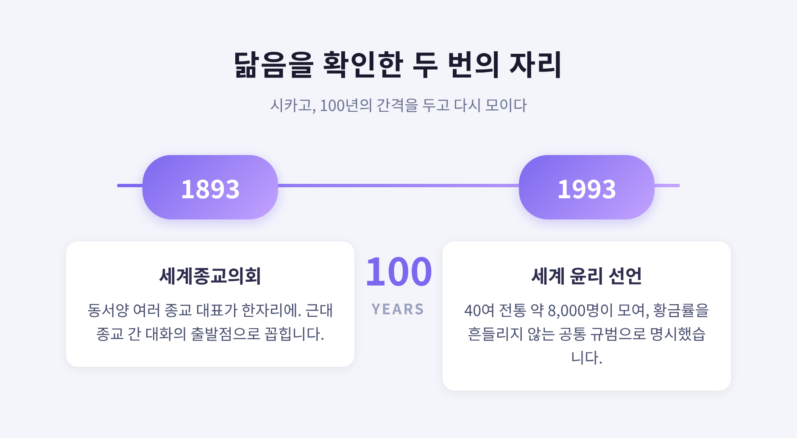

오늘은 세계 여러 종교에 공통으로 나타나는 '황금률'을 정리해 보려 합니다. 결론을 먼저 말씀드리면, 서로 교류가 없던 시대와 지역에서도 거의 같은 가르침이 따로따로 등장했습니다. 어느 믿음이 옳은지를 가리려는 글이 아니라, 닮은 한 문장을 나란히 들여다보려는 글입니다.
황금률은 한마디로 '상호성의 윤리'입니다.
핵심은 단순합니다. 내가 대접받고 싶은 대로 남을 대하라는 것입니다.
남이 실제로 나를 어떻게 대하느냐가 기준이 아닙니다. 내가 바라는 기준으로 남을 대한다는 점이 중요합니다.
흥미로운 사실이 하나 있습니다. '황금률(Golden Rule)'이라는 이름 자체는 고대 경전의 표현이 아닙니다. 대체로 17~18세기 영어권에서 이 원칙에 붙은 별칭입니다.
원칙은 아주 오래전부터 여러 전통에 있었습니다. 이름은 나중에 서구에서 통용된 셈입니다.
그래서 이 문장은 단순한 처세훈을 넘어섭니다. 역지사지와 공감, 공정성을 한 줄에 압축한 표현으로 이해됩니다.
황금률은 크게 두 형태로 나타납니다.
하나는 부정형입니다. "당신이 당하기 싫은 일을 남에게 하지 말라." 흔히 '은률(Silver Rule)'이라 부릅니다.
다른 하나는 긍정형입니다. "당신이 대접받고 싶은 대로 남을 대접하라."
두 형태의 무게중심은 조금 다르게 설명되곤 합니다. 부정형은 해를 끼치지 않음에, 긍정형은 적극적으로 선을 행함에 가깝다는 것입니다.
여기서 한 가지는 조심스럽게 짚어야 합니다.
"오직 한 종교만 긍정형으로 말했고 그래서 더 우월하다"는 주장이 일부 자료에 있습니다. 다만 이는 비교종교 학계에서 논쟁적인 견해입니다.
여러 전통에도 적극적 이타의 가르침이 따로 풍부합니다. 불교의 자비, 이슬람의 형제애, 유교의 인(仁)이 그렇습니다.
그러니 이 글에서는 형태가 다양하다는 사실만 전합니다. 우열은 가리지 않겠습니다.
아래 인용은 영어권 자료의 번역을 옮긴 것이며, 판본과 번역자에 따라 표현이 다를 수 있습니다. 어느 것도 우열로 배열하지 않았습니다.
유대교 — 힐렐의 말입니다. "너에게 미운 일을 네 이웃에게 하지 말라. 이것이 토라 전체이고, 나머지는 그 해설이다. 가서 배우라." (탈무드 샤바트 31a)
기독교 — 예수의 산상수훈입니다. "무엇이든지 남에게 대접을 받고자 하는 대로 너희도 남을 대접하라. 이것이 율법이요 선지자니라." (마태복음 7:12)
이슬람 — 하디스의 한 구절입니다. "너희 중 누구도, 자기 자신을 위해 바라는 것을 형제를 위해 바라지 않는 한, 참된 신앙인이 아니다." (나와위 40 하디스 13번)
유교 — 공자의 답입니다. "자기가 원하지 않는 바를 남에게 베풀지 말라(己所不欲 勿施於人)." (논어 위령공편)
불교 — "자기에게 거슬리는 것을 남에게 행하지 말라." (우다나바르가 5.18)
힌두교 — "이것이 의무(다르마)의 핵심이다. 너에게 행해졌을 때 고통을 줄 일을 남에게 행하지 말라." (마하바라타 아누샤사나 파르바 113.8)
자이나교 — "사람은 세상의 모든 존재를 자기가 대접받고 싶은 대로 대해야 한다." (수트라크리탕가 1.11.33)
조로아스터교 — "자기 자신에게 해로운 일을 남에게 하지 말라." (샤야스트-나-샤야스트 13.29)
도교 — "이웃의 이득을 내 이득처럼 여기고, 이웃의 손실을 내 손실처럼 여기라." (태상감응편 213–218)
시크교 — "나는 누구에게도 낯선 이가 아니며, 누구도 나에게 낯선 이가 아니다. 참으로 나는 모두의 친구다." (구루 그란트 사힙 p.1299)
바하이 신앙 — "네가 짊어지기 싫은 짐을 어떤 영혼에게도 지우지 말라." (바하올라, 『Gleanings』)
표현은 제각각입니다. 그러나 바라보는 방향은 한곳을 향합니다.
이 닮음이 공식적으로 모인 자리가 있었습니다.
1893년 시카고에서 '세계종교의회'가 열렸습니다. 동서양의 여러 종교 대표가 한자리에 모인 일은 근대 종교 간 대화의 출발점으로 꼽힙니다.
정확히 100년 뒤, 같은 시카고에서 의회가 다시 열렸습니다. 1993년, 40개 이상 전통의 약 8,000명이 모였습니다.
이 자리에서 「세계 윤리를 향하여: 최초의 선언」이 채택되었습니다. 가톨릭 신학자 한스 큉이 초안을 맡았고, 달라이 라마를 포함한 200명 이상의 종교 지도자가 서명했습니다.
선언은 황금률을 이렇게 명시했습니다. 여러 천년 동안 수많은 종교·윤리 전통에서 발견되는 흔들리지 않는 규범이라고 말입니다.

황금률이 완벽하다고 말하지는 않겠습니다.
대표적 비판이 있습니다. 작가 버나드 쇼는 이렇게 꼬집었습니다. "남들을 네가 대접받고 싶은 대로 대하지 말라 — 그들의 취향은 다를 수 있다."
내 기준을 일방적으로 들이밀면 상대의 개별성을 무시할 수 있다는 지적입니다.
철학자 칸트도 한계를 짚었습니다. 황금률에는 보편 법칙이 되기 어려운 빈틈이 있다고 보았습니다.
사회적 불평등이 전제된 자리에서는 '서로 대접한다'는 발상이 부당함을 가릴 수 있다는 비판도 있습니다.
물론 옹호도 있습니다.
거의 모든 문화에서 따로 등장했다는 사실은, 이 원칙이 도덕의 깊은 공통 구조를 건드린다는 근거로 제시됩니다.
비판을 되받는 목소리도 있습니다. 황금률을 '취향의 투사'가 아니라 '존중받고 싶은 보편적 바람'으로 읽으면, 상당수 반례가 풀린다는 것입니다.
예전에는 단순한 도덕 격언으로 읽혔습니다. 지금은 비판과 재해석을 거친 살아 있는 윤리로 다뤄집니다.
끝으로 한 마디만 더 드리겠습니다.
닮았다는 것이 같다는 뜻은 아닙니다. 각 전통은 이 문장을 저마다 다른 세계관 안에 놓습니다. 그 차이를 평탄하게 지워서는 안 됩니다.
다만 한 가지는 분명합니다.
"멀리 떨어진 믿음들이, 타인을 나처럼 헤아리라는 한 문장에서 만난다."
서로 다른 길을 걷는 이들이 같은 자리에서 마주칠 수 있겠냐고 물으신다면, 적어도 이 한 줄 앞에서는 그렇다고 답하겠습니다.